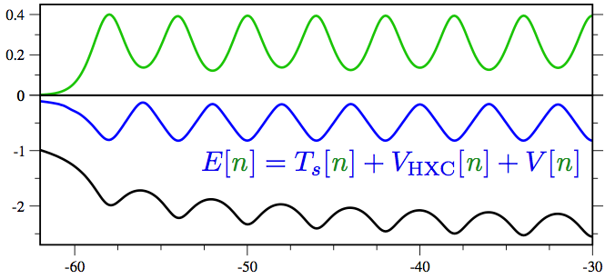

Latest News
Studying Density Functional Theory in a 1D Laboratory
(Aug. 22, 2012)
At the heart of the enormously successful density functional theory (DFT) method lies a functional that gives the ground state energy of any system provided only its density. Can this exact energy functional be written down? What are its key properties?
Except for a handful of small systems, computing the exact functional in three dimensions is too difficult to permit a systematic study of its properties. However, a recent paper in Physical Review Letters shows that in one dimension—thanks to the power of density matrix renormalization group (DMRG) calculations and the flexibility of the ITensor Library—one can calculate the exact densities of a wide variety of continuum, long-range interacting systems consisting of long chains of artificial atoms.
From these exact densities, it is relatively straightforward to calculate the exact density functional and a host of other quantities of interest in DFT. In the future, this 1d laboratory should be useful for studying popular density-functional approximations and exploring improved functionals which could be applied to strongly correlated systems in 3d.
Read the paper here.
Majorana Fermions Thrive in the Hostile World of Electrons
(Sept. 19, 2011)

Recently, there has been a surge in proposals to observe exotic fractional particles known as Majorana fermions using rather conventional condensed matter systems. Producing and controlling these particles would be a key step toward building a robust quantum computer. In one of the simplest setups, Majorana fermions could be produced by applying a magnetic field to certain superconducting nanowires. But our present theoretical understanding leaves out many of the complications expected in a realistic nanowire experiment.
In a recent paper produced using extensive ITensor Library simulations, we take the important step of reintroducing the fact that electrons repel one another. The key issue is the extent to which the Majorana fermions survive these more realistic conditions. Although we find that electron interactions make them more fragile to thermal fluctuations, interactions ultimately result in a net gain since they make the Majoranas more robust to electron density fluctuations and allow them to appear at weaker magnetic fields - the latter two issues being more pressing experimentally. In fact, we go so far as to show that a magnetic field may not be necessary at all given the right combination of materials properties and strong interactions.
See the Physics synopsis.